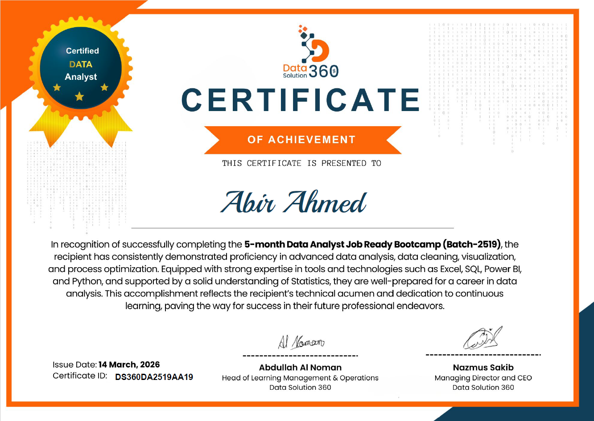
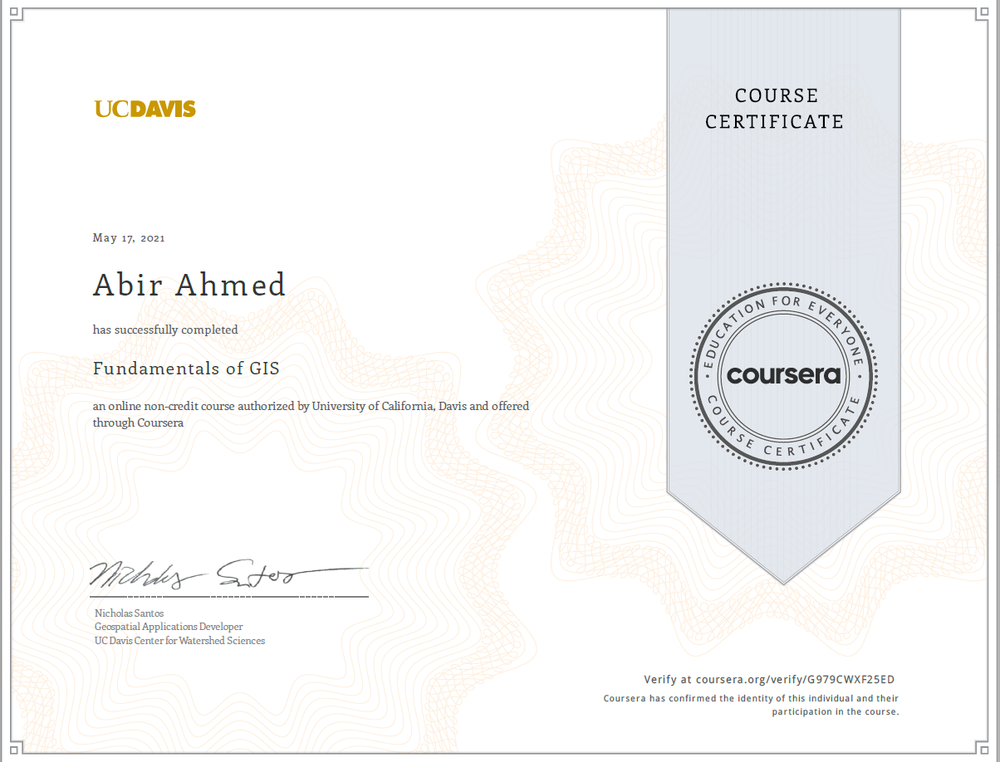

Education
CUETBachelor of Urban and Regional Planning from Chittagong University of Engineering and Technology (2018–2023), completed with CGPA 3.20/4.00.
Masters’ applicant with expertise in geospatial analysis, disaster management, and urban planning. My work combines GIS, remote sensing, spatial analysis, transportation planning, and environmental planning with strong field experience and research interest in land-use change and travel behavior.
A concise overview of my education, professional experience, internship training, research interests, and technical strengths.
Bachelor of Urban and Regional Planning from Chittagong University of Engineering and Technology (2018–2023), completed with CGPA 3.20/4.00.
Worked as Assistant Urban Planner at Sheltech Consultants Private Limited and as GIS Operator at Development Design Consultant Limited, with experience in masterplan projects, field surveys, GIS data handling, and stakeholder engagement.
Internship Trainee at Global Survey Consultants, Bangladesh (Nov 2022 – Dec 2022), where I developed practical understanding of GIS tools, projection systems, and spatial planning workflows.
Research interests include land-use change, transportation planning, spatial analysis, urban geography, environmental health, and disaster management. Skilled in ArcGIS, QGIS, AutoCAD, Google Earth Engine, SPSS, Python, R, and Microsoft Office tools.
My academic work includes publications and thesis research focused on travel behavior, transportation planning, and community-based urban risk assessment.
A research preprint focused on understanding real-life travel behavior patterns for work-based trips in Agrabad, Chattogram, with implications for transportation planning and mobility analysis.
View Publication →Sarker, S.; Khan, M.F.; Sharker, M.Z.R.; Ahmed, A.; Raja, D.R. Presented at the 3rd International Conference on Urban and Regional Planning (ICURP 2023), organized by Bangladesh Institute of Planners (BIP), Dhaka, Bangladesh, pp. 403–428.
View Paper →This undergraduate thesis applies a Multinomial Logit Model to analyze the factors influencing mode choice for work-based trips in Agrabad, Chattogram. The study examines socio-economic variables, travel characteristics, and behavioral patterns to understand urban mobility decision-making.
View Thesis →Selected certificates that reflect my additional training in data analysis and GIS fundamentals.

Successfully completed the 5-month Data Analyst Job Ready Bootcamp (Batch-2519). Issue date: 14 March 2026. Certificate ID: DS360DA2519AA19.

Successfully completed the online non-credit course “Fundamentals of GIS,” authorized by the University of California, Davis and offered through Coursera. Completed on 17 May 2021.
Download my CV for a complete overview of my education, professional experience, technical skills, research interests, and academic background.
My CV includes my academic background, professional work in urban planning and GIS, research experience, technical skills, and supporting credentials.
Selected fieldwork, survey documentation, technical outputs, and project-related visuals grouped into four professional portfolio categories. Click any category to open the image slider.
Image slider preview